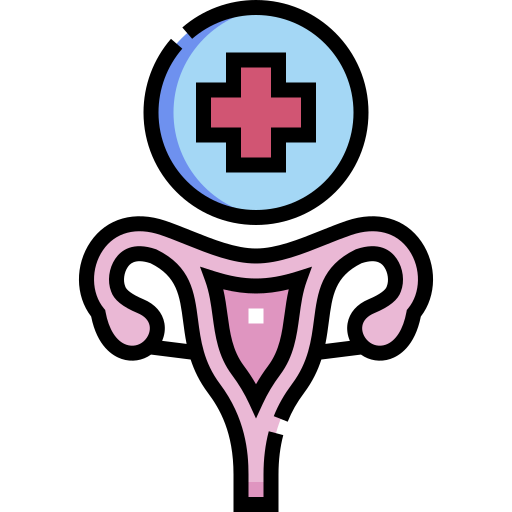

Gói tầm soát ung thư cổ tử cung
Việc tầm soát ung thư cổ tử cung định kỳ không chỉ giúp người bệnh phát hiện ung thư, từ đó có pháp đồ điều trị hiệu quả, rút ngắn thời gian điều trị, tốn ít chi phí, tránh được các rủi ro do biến chứng, nâng cao tỷ lệ sống, mà còn giúp người bệnh có kế hoạch phòng tránh ung thư từ những dấu hiệu bất thường của tế bào tại cổ tử cung.